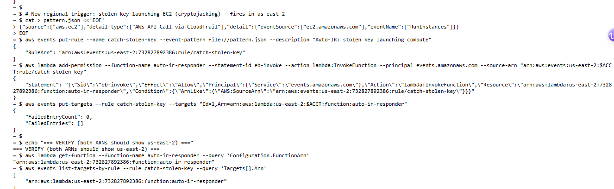
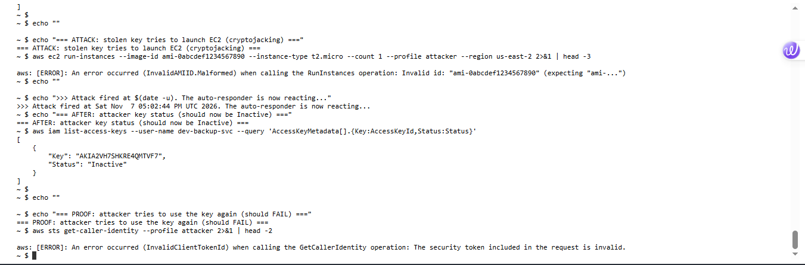
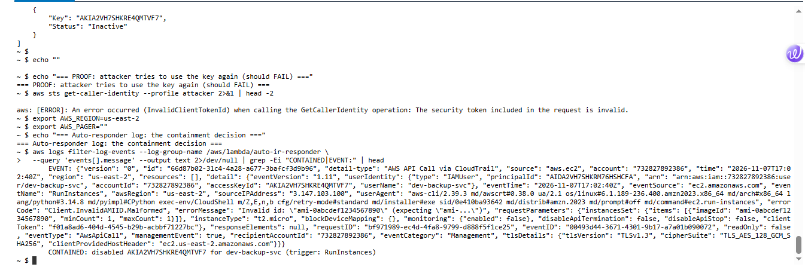

Lab 10: Automated Incident Response - Auto-Containing a Stolen Key¶
Outcome: an attack detected and contained in under two minutes, with no human involved
I built an automated incident-response pipeline in AWS: EventBridge watches for a stolen key misbehaving, and the instant it does, a Lambda function automatically disables that key. I then attacked it with a leaked credential and watched the key get killed on its own. This is the automation layer on top of the manual investigation from Lab 09.
In plain English
What this is: In Lab 09 I caught a stolen AWS key by reading logs after the fact. That is slow, an attacker can do a lot of damage before an analyst notices. This lab makes the response automatic: the moment a stolen key does something suspicious, the system disables it by itself, in seconds, 24/7, no analyst needed.
Why it matters: The number-one thing attackers do with a stolen AWS key is spin up expensive servers to mine cryptocurrency. Every minute counts. Automated containment turns a response time of "whenever someone notices" into "a few seconds."
What I did: Built a rule that watches for a key trying to launch servers, wired it to a small program (a Lambda function) that disables the key, then played the attacker and watched my own defense shut me down.
Result: The stolen key tried to launch EC2 compute. Within about a minute, the key was automatically disabled and the attacker was locked out, confirmed in the logs with no human action.
Skills this lab shows: AWS EventBridge Lambda Python CloudTrail IAM Security automation (SOAR) Detection engineering
Key terms in this lab
- EventBridge: AWS's event router. It watches for things happening and can trigger an action when a pattern matches.
- Lambda: code that runs on demand with no server to manage. Here it is the "robot analyst" that disables the key.
- CloudTrail: AWS's audit log; it feeds the API-call events EventBridge watches.
- SOAR: Security Orchestration, Automation and Response, using automation to handle incidents instead of doing every step by hand.
- Cryptojacking: stealing cloud compute to mine cryptocurrency. The classic payoff for a stolen AWS key.
1. The problem with manual response¶
In Lab 09 I detected a stolen key by investigating CloudTrail after the attack. That works, but it depends on a human noticing. An attacker with a stolen key can enumerate, escalate, and launch resources within seconds. The fix is to remove the human from the containment step for high-confidence signals.
2. The pipeline¶
Attacker (stolen key) --- tries to launch EC2 (cryptojacking) ---> AWS API
|
CloudTrail records the RunInstances call
|
EventBridge rule matches the event pattern
|
Lambda "auto-ir-responder" fires
|
Disables the offending user's access keys
|
Attacker's next call fails. Contained.
Three moving parts: a CloudTrail-fed event stream, an EventBridge rule that recognizes the attack, and a Lambda that does the containment.
3. The responder (Lambda)¶
The function reads the event, finds the user behind the API call, and disables their access keys. It has a safety allow-list so it can never lock out a protected account.
import json, boto3
iam = boto3.client('iam')
PROTECTED = {"admin", "root"} # safety: never auto-disable these
def handler(event, context):
detail = event.get("detail", {})
user = (detail.get("userIdentity") or {}).get("userName")
trigger = detail.get("eventName", "unknown")
if not user or user in PROTECTED:
return {"status": "skipped"}
disabled = []
for k in iam.list_access_keys(UserName=user)["AccessKeyMetadata"]:
iam.update_access_key(UserName=user, AccessKeyId=k["AccessKeyId"], Status="Inactive")
disabled.append(k["AccessKeyId"])
print(f"CONTAINED: disabled {k['AccessKeyId']} for {user} (trigger: {trigger})")
return {"status": "contained", "user": user, "disabled_keys": disabled, "trigger": trigger}
The Lambda's execution role is scoped to just what it needs: iam:ListAccessKeys, iam:UpdateAccessKey, and CloudWatch Logs. Least privilege applies to the responder too.
4. The trigger (EventBridge)¶
The rule matches a stolen key's most likely move: trying to launch compute.
{
"source": ["aws.ec2"],
"detail-type": ["AWS API Call via CloudTrail"],
"detail": {
"eventSource": ["ec2.amazonaws.com"],
"eventName": ["RunInstances"]
}
}

catch-stolen-key wired to the auto-ir-responder Lambda, both confirmed in the same region.5. The test: attack vs automation¶
Acting as the attacker with a leaked key, I tried to launch an EC2 instance. The key was Active before. Within about a minute, with no human action, it was Inactive.

RunInstances, then its status flips to Inactive on its own, and the attacker's next call fails with InvalidClientTokenId.The responder logged its own decision, proof the automation, not an analyst, did the containment:

RunInstances event for dev-backup-svc and disabled the key.6. Two lessons this lab taught me¶
Lesson 1: AWS_REGION overrides AWS_DEFAULT_REGION
My first build silently landed in the wrong region because CloudShell sets AWS_REGION, which takes precedence over the AWS_DEFAULT_REGION I had set. An EventBridge rule in the wrong region would never fire, a silent failure, the worst kind. I now pin both variables and verify the ARNs before trusting a pipeline.
Lesson 2: Service Control Policies can restrict by region
This account's SCP allowed Lambda and EventBridge in us-east-2 but explicitly denied them in us-east-1. Combined with the fact that IAM is a global service (events only in us-east-1), I had to design the trigger around a regional signal (EC2 RunInstances) that the governance policy actually permitted. Real cloud security means building within the guardrails you are given.
7. Verdict and the automation's place¶
Verdict: True Positive | High | Stolen credential attempting resource hijacking, auto-contained
A service account with no EC2 permissions attempted to launch instances, a strong indicator of a compromised key being used for cryptojacking. The automated responder disabled the credential before any compute was launched.
Where automation fits in incident response: automated containment is powerful but must be used only on high-confidence signals, with a safety allow-list, so it never disrupts legitimate work. A service account suddenly trying to launch EC2 is high-confidence. For lower-confidence signals you alert a human instead. The judgment of what to automate is the security-engineering skill; the Lambda is just the hands.
8. Takeaways¶
- Automated containment turns response time from minutes or hours into seconds, which for a stolen key can be the difference between a non-event and a large bill or breach.
- Automate only high-confidence signals, and always include a safety allow-list. A responder that locks out legitimate users is worse than none.
- Least privilege applies to the responder, not just to users. The Lambda can disable keys and nothing else.
- Verify region and guardrails first.
AWS_REGIONprecedence and region-scoped SCPs can silently break a pipeline. - This is the SOAR layer on top of Lab 09: detect, then respond automatically. Together they cover the full AWS incident-response loop.